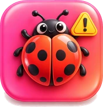

Menü, not, takvim ve yol arkadaşı cebinde.
Yurtlar
Ders notları
Akademik takvim
Güz dönemi vizeleri 16 Kasım’da başlıyor. "Tahmini" yazan tarihler (mazeret sınavları ve bahar vizeleri) akademik takvimdeki "8.–9. hafta" ve "13.–14. hafta" kuralına göre hesaplanmıştır; kesin günleri bölümün açıklar. Kaynak: Fırat Üniversitesi 2026–2027 Genel Akademik Takvimi (Tıp ve Diş Hekimliği hariç).
Araçlar
Ortalama hesapla
Her dersin AKTS kredisini ve harf notunu gir.
Kendi sınavına kaç gün var?
Sınav tarihini seç.
Otomatik, telefonunun ayarına göre açık ya da koyu olur.
Ayarlar
Tercihler
Destek
Hakkında
KampüsCepte v2.7 • Fırat Üniversitesi Öğrenci Platformu
Mod
Renk teması
KampüsCepte nedir?
Elazığ'daki üniversite öğrencileri için yurt ve Üniversite Evi yemek menüleri, ders notları, takvim ve yol arkadaşı gibi araçları tek yerde toplayan ücretsiz bir uygulama.
Yemek menüleri ne kadar güncel?
Menüler KYK ve Üniversite Evi'nin yayımladığı listelerden hazırlanıyor. Yurt müdürlüğü gün içinde değişiklik yaparsa menü farklı olabilir; bir yanlışlık görürsen İletişim bölümünden haber verebilirsin.
Yemeklerin fotoğrafları neden bazen çizim?
Yemeklerin gerçek fotoğraflarını tek tek ekliyoruz. Fotoğrafı henüz olmayan yemeklerde geçici bir çizim görürsün; fotoğraf eklendiğinde çizimin yerine otomatik geçer.
“Kişi bu menüye baktı” sayısı neyi gösteriyor?
O gün aynı menüyü gören farklı kişi sayısı. Tüm KYK yurtlarında menü aynı olduğu için sayı ortak tutulur; aynı kişi menüyü birkaç kez açsa bir kez sayılır.
Yemeğe nasıl puan verir, yorum yazarım?
Her menünün altındaki değerlendirme alanından yıldız verip yorum yazabilirsin. Uygunsuz bir yorum görürsen yorumun yanındaki bildir düğmesini kullanabilirsin.
Yurdumu nasıl değiştiririm?
Ayarlar > Profil bölümünde “Kaldığınız Yurt” alanından seçersin. Seçtiğin yurt bir sonraki açılışta hatırlanır.
Bilgilerim nerede saklanıyor?
Adın, yurdun, bölümün ve avatarın yalnızca bu cihazda tutulur. Ayrıntılar için Gizlilik ve çerezler sayfasına bakabilirsin.
Karanlık modu nasıl açarım?
Ayarlar > Görünüm bölümünden Açık, Koyu ya da Sistem temasını seçebilirsin. Ana ekranın üstündeki ay simgesi de aynı işi yapar.
Telefonuma uygulama gibi nasıl eklerim?
Tarayıcının menüsünden “Ana ekrana ekle” seçeneğini kullan. Böylece KampüsCepte uygulama gibi tam ekran açılır.
Bir hata buldum ya da öneri vermek istiyorum.
İletişim bölümünden bize yazabilirsin. Menü hatası, öneri ve sorunları okuyup mümkün olan en kısa sürede değerlendiriyoruz.
Bize ulaşın, birlikte daha iyi olalım
Bir sorun mu var, bir hata mı fark ettin ya da KampüsCepte'yi daha iyi yapacak bir önerin mi var? Seni dinlemek isteriz.
Sorular, geri bildirimler ve diğer tüm konular için bize e-posta gönderebilirsin.
Ne hakkında yazacaksın?
Bir kategori seç, e-posta konusu hazır gelsin.

Hata bildirUygulamada beklenmeyen bir sorun mu yaşıyorsun? Bize bildir. Öneri gönderGörmek istediğin bir özellik ya da iyileştirme fikrini paylaş.